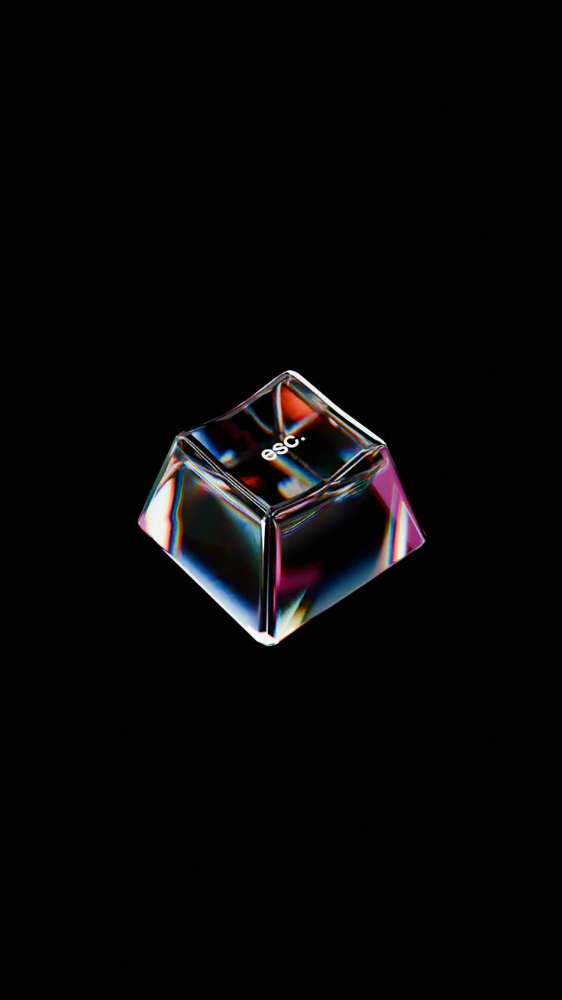
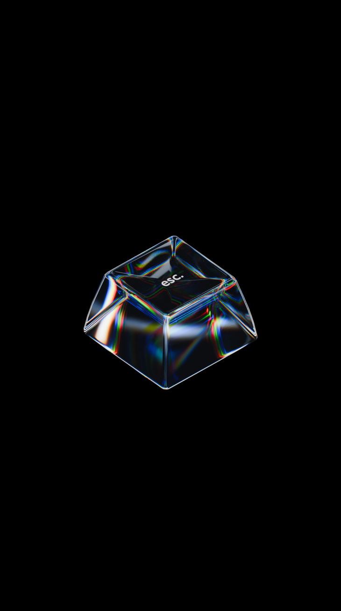

<!doctype html><html lang="ja"><meta charset="utf-8"><title>Studio99 — Optical keycap comparison</title><style>*{box-sizing:border-box}body{margin:0;background:#030304;color:#ddd;font:12px Arial,sans-serif;padding:32px}header{display:flex;justify-content:space-between;letter-spacing:2px;font-size:10px;color:#999;margin-bottom:24px}main{display:grid;grid-template-columns:1fr 1fr;gap:28px}figure{margin:0}figcaption{font-size:11px;letter-spacing:2px;padding:16px 0;border-top:1px solid #333}.frame{height:650px;overflow:hidden;background:black;display:flex;align-items:center;justify-content:center}.frame img{height:100%;width:100%;object-fit:contain;transform:scale(1.8)}footer{color:#777;font-size:10px;letter-spacing:.6px;margin-top:22px}</style><header><span>STUDIO99 / OPTICAL MATERIAL STUDY</span><span>2026.11.05</span></header><main><figure><figcaption>01 / USER REFERENCE</figcaption><div class="frame"></div></figure><figure><figcaption>02 / BLENDER — CYCLES, THREE IOR PASSES</figcaption><div class="frame"></div></figure></main><footer>Actual geometry and optical rendering. The lighting and spectral distribution are independently authored; the result is not a pixel-identical reproduction.</footer></html>
